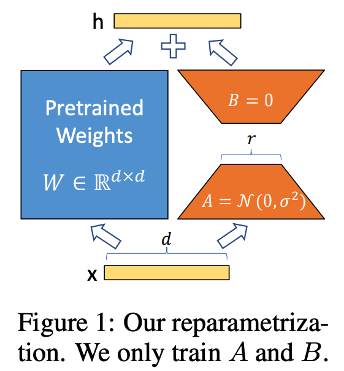
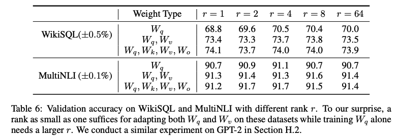
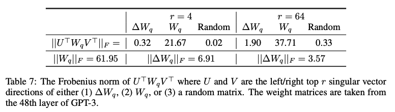

LoRA 論文まとめ
今回紹介する論文は「LoRA: Low-Rank Adaptaion of Large Language Models [1]」です。
[1]E. J. Hu et al., “LoRA: Low-Rank Adaptation of Large Language Models.” arXiv, Oct. 16, 2021. Accessed: Feb. 04, 2024. [Online]. Available: http://arxiv.org/abs/2106.09685
この論文は、大規模な言語モデルの効率的なタスク固有の適応方法であるLow-Rank Adaptation (LoRA) を提案しています。LoRAは、トランスフォーマーアーキテクチャの各層において、訓練可能なランク分解行列を導入することで、事前学習されたモデルの重みを凍結させつつ、適応時の訓練可能パラメータの数を大幅に削減します。GPT-3 175Bなどの大規模モデルにおいて、LoRAは微調整と同等またはそれ以上のモデル品質を達成しつつ、訓練可能パラメータの数を1万分の1に減少させ、GPUメモリ要件を3分の1に削減することができます。また、LoRAは追加の推論レイテンシーを発生させずに、複数のタスク間で効率的に切り替えることが可能であり、他の適応技術と組み合わせることもできます。

Figure 1より引用
LoRAでは、もともとあったGPTなどのパラメータをファインチューニングする必要はなく、Figure 1で言う AとBのみ学習すれば良いです。(詳細はこちらのブログ記事に分かりやすく書かれています）
数式の解説
- は、パラメーターΦの最適値を見つけることを目指しています。これは、モデルがデータを最もよく説明するように、パラメーターを調整するプロセスです。
- は、データセットZのすべてのデータポイント(x,y)にわたって合計することを意味します。ここでxは入力データを、yはそれに関連する出力データを指します。
- は、各出力データyの全ての要素にわたって合計することを意味します。つまり、もしyが複数の部分からなるなら、それぞれの部分について計算を行います。
- は、与えられた入力xと、それまでの出力y<tを考慮したときの、次の出力ytの確率の対数を計算しています。PΦはモデルの確率分布を表し、Φはその分布を決定するパラメーターです。（つまりリカレントな構造を持つニューラルネットワークの、時刻tまでの出力のようなイメージ。以前までの時刻の出力を再度入力として扱う）
この数式では、事前に学習された大規模な言語モデルを適応させるためのパラメーターを最適化するLoRA (Low-Rank Adaptation) のアプローチを採用しています。ここでの目標は、モデルの新しいタスクへの適用にあたってですが、これは全体のモデルのパラメーター には影響を与えず、モデルを更新するために追加された小さな変更 のみに依存しています。
- は、最適なパラメーター の集合を見つけることを目指しています。
- は、データセット のすべてのデータポイント にわたって合計することを意味します。
- は、各出力データ の全ての要素にわたって合計することを意味します。
- は、確率の対数を取ることを意味し、数値的な安定性と計算の単純化のために使われます。
- は、入力 ( x ) と、それまでの出力 を考慮した、次の要素 の確率を表します。
ここで、の部分のΔは差分を表す。maximizeするのはに関する部分のみなので、実質新たに付け足したLoRAのモジュールに関するパラメータのみ学習すれば良いということになる。(の部分のみにが掛かっている。)
実験

Table 6 から引用
AとBの行列積を計算することになると思いますが、rank（≒パラメータ数）が多ければ多いほど性能が良いということでもない点が興味深いですね。LoRAは少ないパラメータで良い性能を出せるという点が利点とも言えます。

Table 7から引用
ΔWは、モデルの特定の部分（重み行列W）に小さな変更を加えることを表しています。
画像には、ΔWが元の重み行列Wとどのような関係にあるかを定量的に評価する実験結果が示されています。具体的には、ΔWがWのどれだけの部分を強調（amplify）しているのか、またどれだけ新しい方向（new directions）を提供しているのかを分析しています。
実験では、ΔWとWを特定の数の主成分（singular vectors、ここではrと表記）に射影し、それぞれのフロベニウスノルム（Frobenius norm）を計算しています。フロベニウスノルムは行列の大きさ（magnitude）を測るもので、ここではΔWの変更がWにどの程度影響を与えているかを示す尺度として使用されています。
表に示された結果は、ΔWがWの特定の特徴を強調していること、および新しい情報を加えていることを定量的に示しています。また、ランダムな行列との比較を通じて、ΔWの変更が偶然の結果ではなく、意味のある方向性を持っていることが示されています。
参考文献
- 「LoRA: Low-Rank Adaptaion of Large Language Models の解説」(https://zenn.dev/fusic/articles/paper-reading-lora)